Libft
This library is called libft
All these funtions are tested with the 42fileChecker that was initaliy created by Jean-Michel Gigault. Test are provided by Quentin Perez, Merle Alexandre, Gabriel Toublanc, soyel, stherman, Jonathan Philippe.
The 42fileChecker is a shell script that allows testing of various projects. In this case we are testing the libft project. The shell script when ran shall prompt you with a choice of which project you want to select.
After selecting the libft project you will be asked to import the file path to the repo containing the libft c files that you are wanting to test
After this you can run the test. This script pulls or downloads repos from github that contains the test for the code. It then complies your c files along with the tests c files to allow the test execute properly
The test you see below are are passed to the ft_function as well as the standard implantation of the function
Makefile
At the top of the file we are declaring variables that can be called from later in the make file. NAME is the file it is going to produce, in this case, libft.a. INCLUDES targets the includes folders which are the location of the .h or header files for the C code. FLAGS is setting gcc compiler flags that check for extra things outside a normal gcc file_name compilation. CC is the compiler options in this case, it is gcc. OBJ are the object files that come from compiling the c files with gcc.
Next up we have functionality that is passed to the make file. When running the make file using 'make' in the terminal where the file is we start with compiling all the .c files. It does this by using the % as a wild card to call all the .c files that have the same name as the .o files listed. Then it runs the $(CC) which is GCC, $(FLAGS) which is -Wall -Wextra -Werror, then $(INCLUDES) which is -I ./includes. -c is telling the compiler to not link any of the files it's compiling.
The next call is used to create the library file or .a file. It uses ar rc to put all the objects into the libft.a file then uses ranlib to actually create a useful library file.
The clean: function is called when running make clean in the terminal. @/bin/rm -f uses the bin/bash command rm than the -f flag is to indicate it is a file it is deleting, not a repo. Then it cleans all files listed in the OBJ variable. fclean: does the same thing except it also removes the .a file or library file that was compiled with it as well. Running the re: command essentially calls fclean to clear out the object files as well as the .a file created, then calls all: to recompile the program from the top down.
The .phony is used in case someone tries to pass functions calls as parameters to the make file. It'll make it so that way it is ignored or not picked up.
At the end of this, we end up getting a libft.a file that we can use in other make file configurations to access the library of functions we have without having to have all the .c files together in a single place.

ATOI
show test
Here we have the ft_atoi function. This function takes in an array of characters then converts them to an integer. The parameter is an array of characters called str. Two variables, a long called result as well as an integer called sign, are declared on top. Result is initialized to 0 then sign is initialized to 1 before starting the first while loop.
The first while loop here iterates through the array of characters str using the pointer symbol here. It is checking for blank space ' ' or any of the character codes between 8 or 13 in the ascii table decimal format. Most of these are newlines, tabs or other spaces that are parsed out of a string before getting to the number characters that are also utilized by the actual atoi function in the c string lib.
After that, it checks for a - or + character in the array to see if it is a positive or negative number. If there is not a - or + character present, it assumes it is positive, leaving the integer sign to 1. If there is a — character, it changes the sign to -1 to make sure it returns a negative number once converted. It then iterates up through the str array to start checking numbers.
The final while loop runs as long as the pointer in the string it is referring to is within the '0' or '9' character set as well as it not being null or '/0'. It then converts the value with a base 10 conversion using Ascii table values. It sets the first character — '0', which holds an ascii table value of 48. The character 1 holds an ascii value of 49. For instance, we have the character array '19' it is essentially taking 0 * 10 + 49 - 48 to get 1. Then it takes 1 * 10 + 57 - 48 to get the number 19 which is stored in the long result.
The final return value is multiplied by sign to return the final value that is parsed from the string passed as the parameter *str.

bzero
Here we take in 2 parameters. A void variable called *s which is a pointer to the location in memory a particular variable is stored at, then a size_t called n. size_t is an unsigned integer representing the length of an array. We then use the ft_memset function that we shall cover later. It is essentially setting the memory of the pointer s to zero.

isalnum
This function takes in an integer c then states if it is an ascii value that would represent a character of 0 - 9, a - z, or A - Z. It returns 1 if it does, otherwise, it returns 0

isascii
This function returns a 1 if the integer is within the range of the ascii table, otherwise it returns 0

isdigit
returns a 1 if the value of c is between '0' or '9' relative to the ascii table

isprint
returns a 1 if the value of c is a printable character within the ascii table, otherwise a 0 is returned

itoa
This function is used to convert an integer into a character array. First we create three variables. A character array called str, an integer called i, then a long called num. Next, we sent num equal to n by casting a long variable on the integer. Then we use a function from the stdlib called malloc to allocate memory to the character array we initialized. We typecast a character array by using (char *) before calling malloc. We then set the amount of memory to malloc by calling the sizeof(char) * len(n) + 1. We use a + 1 to ensure room to add the '0\' null pointer to make sure we end the character array.
The len function takes a parameter called n. Then we initialize an integer called i. We then set i equal to 0. Next we check to see if n is less than zero to see if it is a negative number. If it is, we iterate i here to account for the extra space needed to store the '-' sign in the character array. We then turn n into a positive number. Next, we check if n is equal to 0. if it is we again increment i to account for that character in the new character array. Next, we run a while loop on n while dividing it by 10 in order to figure out how many spaces or characters are going to be needed in order to properly allocate the necessary memory for the new character array that is going to store the text value of the number. After we return i which has the length of the new character array needed to properly allocate storage for it.
Next, we do some error handling in case we get a null return. If we get a null return we exit the function while returning 0. None of the remaining code should be executed. Next, we set i equal to the length of the number. Check again if the number is negative. If it is, we make it positive while setting the first character in our array to '-'. Then if the number is zero, we then set the first character in our array to 0. Then we increment back from i. Next we run a while loop on num. We are then setting each index in the str array to the corresponding value of (num % 10) + '0'. Then divide num by 10. Say we have the number 123. First (123 % 10) + '0' turns into 3 + '0' giving it the value of '3' or 51 as the last character. Next, it does (12 % 10) + '0' turns into 2 + '0' giving it the value of '2' or 52 for the character behind it. Finally, it'll get (1 % 10) + '0' turns into 1 + '0' giving it a value of '1' or 51 for the final character.
Lastly, we have str[len(n)] set the very last character to a '\0' or a null pointer to finish off the string, which is now '123\0' then returning the character array


lstadd
This function is used to add an item to a linked list in C. This function takes two parameters. One is a pointer to an array of t_list called alst. t_list is a struct defined in the header file called libft.h. The next is a pointer to a t_list called new.
First we error handle by making sure new is not null when passed. Next, we then set the data value of the variable next within a t_list struct called new, that was passed as a parameter, to a pointer alst. Then we also set a pointer alst equal to new after.

lstdel
This function first takes on 2 parameters. First a pointer to an array list of t_list. Second, a pointer to the location of data within the struct along with the size of the data. It then initializes a pointer to a struct called current, then next. After current is set to the pointer of the array list of structs passed in the parameters. Next it loops through the array list of structs. First, it sets the next array list to the location of the current structs next data parameter. Then it calls the del void function passed in the parameter with the current structs content data parameter, then along with the current structs content_size parameter. Then it calls the free function on the current struct. After it sets the current struct equal to next. It does this for the entire linked list. Then, it selects the final list to 0 to return an empty or deleted array list of structs.

lstdelone
This function is used to delete a single struct in a linked list. If first checks to see if the linked list passed is null or if the struct it is referencing is null or if the void del function passed is null. If any of those are null, it returns stopping the function. After it calls the passed del function with the linked list struct content as well as content size as parameters, It then calls free to delete the allocated memory behind the struct's memory allocation within the linked list.

lstiter
This function performs a void function f passed on each struct within the linked list from the initial struct passed in the first parameter. The function loops while no elements are null. It then executes the function on the element. It then sets the struct pointer equal to the next data in the struct, which is a pointer to the next element in the linked list.

lstnew
This function is used to add a new element to a linked list. First it takes the pointer to the data it wants to add. Next it takes the size of the data it is going to add. It then initializes a struct called newlist. Next it initializes a pointer called stuff. It then sets the pointer of stuff to the content passed in the parameter above. Next, it allocates memory for a new element to be added with the type casting of a pointer to an element along with it multiplied by the content size. After it error handles to make sure the newlist is not null. If it is, it returns 0 while exiting the function. Then, it sets the newlist content data to a memalloc block of allocated memory with the size passed to it. It then checks to see if the new content was null. If so, it sets the data in the newlist struct data content to 0 as well as the current size to 0. Otherwise, it sets the newlist->conent to a copy of what was passed in the parameter as void const *content. After it updates the content size to the content_size passed a parameter. After, it sets the next value in the struct to 0 which puts an end to the link list.

memalloc
This function returns a pointer to a malloced size of memory. It takes a size to know how much to malloc for. It then initializes a pointer of data called block. The block is then allocated the amount of memory passed in by size. It then does error handling to make sure the block didn't return null. Then, the ft_bzero function is called with a reference in memory to the pointer of block along with the parameter size. This sets the memory of each spot in the data to 0.

memccpy
First we take in 3 different parameters here. A pointer called dst, another const pointer called src, an integer c, than a size_t n. We then start looping with n being implemented back 1 value. This loop functions while n is not equal to 0. Next, we typecast an unsigned char pointer to the src pointer. An unsigned char is essentially a number that can not be less than 0, it has to remain positive. We then set the pointer equal to the src pointer passed in the parameters. If at any point the src pointer is equal to the int c we passed, we return the dst pointer while stopping execution of the while loop. Otherwise, if n runs out or hits 0, we then return 0 from the function.

memchr
We take in 3 parameters: one a const pointer named s, an integer named c, then a size_t named n. After we start an iteration through the size_t n. After we typecast an unsigned char pointer to the pointer that was passed as s then check if it is equal to the integer c that was passed. If it is, it returns the pointer. Otherwise, it increments the pointer passed using s++ to check the next value. If n runs to 0 then the while loop stops with the function returning 0.

memcmp
This function again takes 3 parameters. Two pointers called s1, s2 than a size_t called n. If loops as long as n is not zero. While looping, it casts an unsigned char pointer to s1 as well as s2 while checking if at any point these values do not equal one another. If they do not, it returns the value of s1 subtracted from s2. Otherwise, it increments s1 than s2 than subtracts from size_t n. If n reaches zero, the while loop stops with the function returning 0.

memcpy
This function takes three parameters. Two pointers dst and src rather than size_t n. We declare a new pointer called ret. We then initialize the value of ret to the dst pointer passed in the parameters. We then iterate through n. We then set the pointer dst equal to the pointer src while typecasting an unsigned char pointer to each. After we return ret which has successfully copied the values of the src pointer.

memdel
this function taps a pointe to an array. It then sets ap equal to 0. After, it calls the free function to unallocate the memory from the pointer passed in the parameter.

memmove
this function takes 2 pointers along with a size_t len as parameters. It also returns a pointer. First we declare another pointer called new. We then set the value of this to the pointer dst passed in as a parameter. After we check if the dst pointer is less than the src pointer. If it is, we run a while loop while the dst subtracted new is less than the len passed in as a parameter. While this condition is met, it sets dst equal to src while typecasting an unsigned char than incrementing after with the ++ on the end. If the dst is greater than the src passed, it then runs a while loop that subtracts from len while len is greater than 0. In this loop, it sets the dst index at len equal to the src indexed at len to similar values while typecasting an unsigned char than incrementing len till it is 0. This makes sure if the dst is less than source it copies what it can otherwise it copies the entire length of what is passed. After these conditions, it then returns new which is the same pointer in memory as dst.

memset
This function takes three parameters: one pointer b, and integer called c, then a size_t called len. First we declare an unsigned character called x. Then we set this character equal to b. Then, we loop through len while it is above zero. We set the character equal to the integer c passed while typecasting it to an unsigned char. We also iterate x. After we return the passed pointer b as it reflects x.

print_list
This function prints out a linked list. It takes a pointe to a struct called list. It then loops through the list while it is not null. It then prints out the content data within the struct. It then sets the list equal to the pointer to the next struct under the next variable within the struct
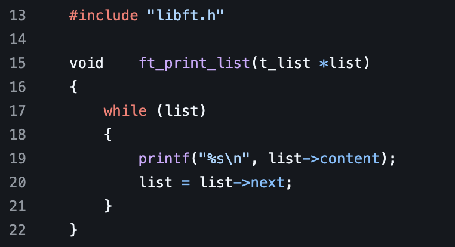
putchar
This function prints a character to the terminal using the Unix standard library function called write. This function takes a single parameter of a character called c. It then uses the write function. The first parameter passed is the file descriptor. This tells it to either print out to standard error (2), standard out (1), or standard in (0). The next parameter is a reference in memory to where the character is stored. The final parameter is used to define how many bytes are needed to write the passed information.
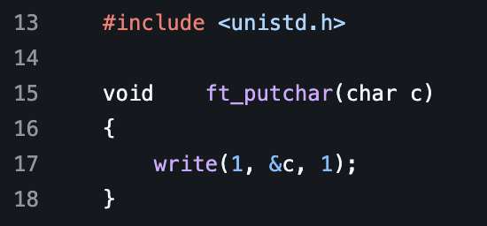
putchar_fd
Similar to the putchar described above, however, there is an extra parameter passed that is an integer that allows you to choose or select a file descriptor. Allowing you to print from stdout, stdin, or stderror.
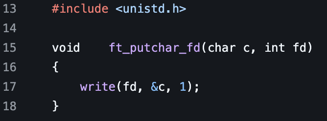
putendln
This function takes a character constant pointer called s. This function then prints the character array or pointe to standard out. It uses a ft_strlen() function to get the length of the array in s. It then calls the ft_putchar function to print out a new line to stdout after the character array above has been printed.
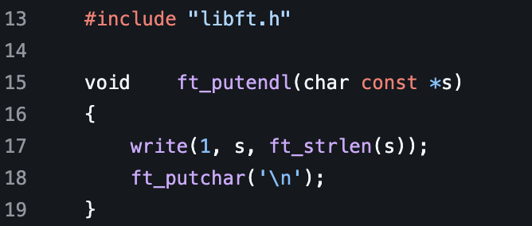
putendl_fd
This is the same as putendln as described above, however with an extra parameter allowing you to select the file descriptor to print to either stdout, stdin, or stderror.
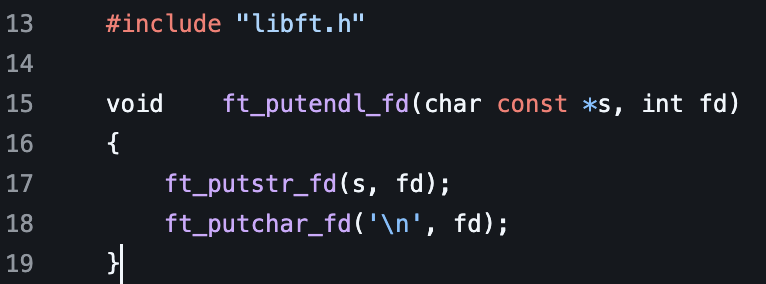
putnbr
This function prints out a number to stdout. First it takes in an integer called n. It then declares a long called num. After it sets num equal to n by typecasting a long to the integer. After that, it checks if num is less than zero. If it is a character '-' is printed, then the number is multiplied by -1 to turn it positive. Next, it checks if num is greater than 9. If it is, this function then uses recursion by calling itself again with the parameter n being passed as num / 10. It does this until the number passed is less than 9. This is what is called the base case for this function that uses recursion. For instance, we pass it the number 123. The first time through it than passes the number 123 / 10 to the function ft_putnbr. It runs this function again from the top, then passes 12 / 10 to the ft_putnbr function. On this call the num is equal to 1 making it less than, not greater than 9. This then calls the ft_putchar function with (1 % 10) + 48 t0 get ft_putchar (49) which is 1 without calling ft_putnbr again. This completes the function called that was ft_putnbr(12 / 10) meaning it then goes to ft_putchar(12 % 10) + 48. Then it goes back through the function to get (123 % 10) + 48 which is 3 + 48 then 51. This in return ends up printing out 123 to stdout.
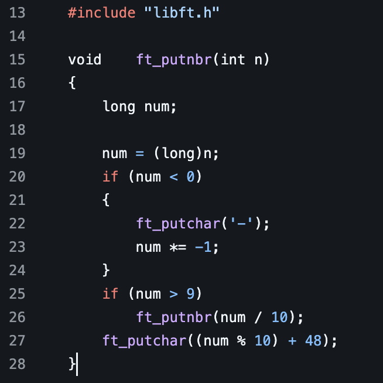
putnbr_fd
This function works the same as the description above expect it takes an extra parameter, that is an integer called fd. This allows you to select the file descriptor the number is printed to.
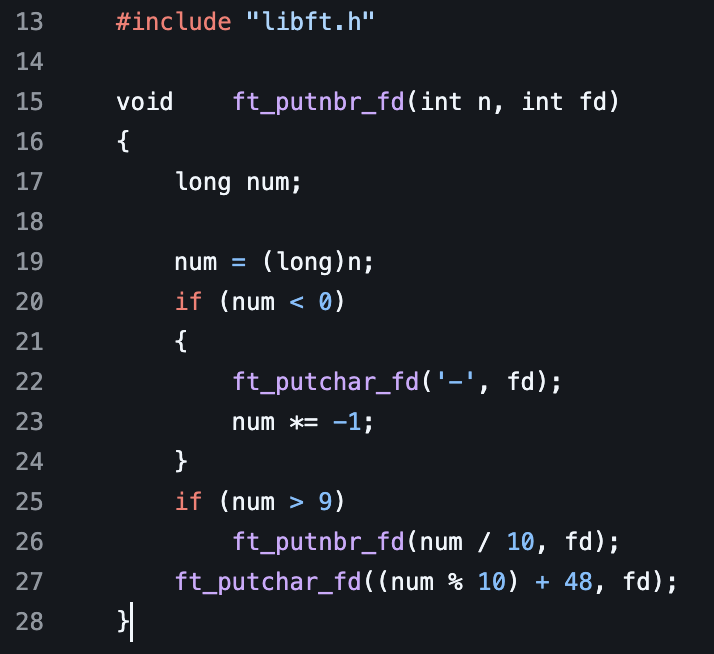
putstr
This function takes a const character pointer called s as a parameter. It then calls the write function from the unix standard library with 1 in the file descriptor parameter, the variable passed for what to print. Then to get the amount of bytes needed, the ft_strlen counts the number of characters in the pointer or array.
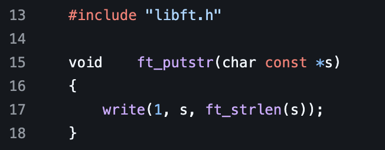
putstr_fd
This function is the same as described above, however it takes an extra parameter fd that lets your select the file description.
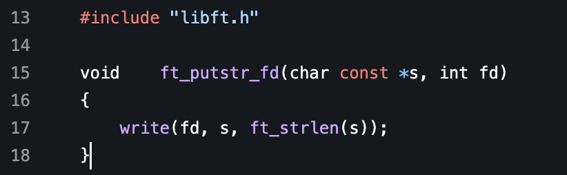
strcat
This functions returns a character array. It had 2 parameters a character array s1 then a const character array s2. Next we declare two integers. One integer is i, the next is count. We then intialzie i to 0 than count to the length of the paramter passed as s2. Next we start a while loop that increments i to the ned of the first character array or pointer. Than we start another while loop the iterativly subtracts from the count variable until it is equl to 0. In this look the characer array s1 is set equal to the valuei n s2 while incrementing both of them. Then the final line sets the last positon fo the s1 character array to '\0' or a null pointer to signal the end of the array. Afte it returns s1 which is an concatainted array of s1 plus s2.
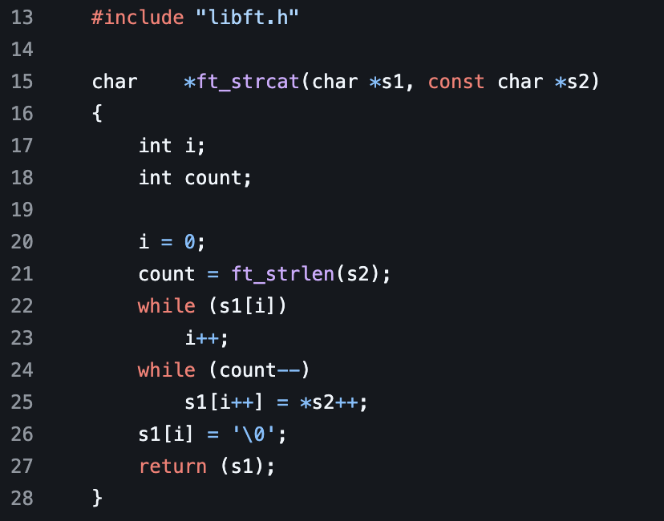
strchr
This function returns a character array. It first takes two parameters. A constant character array s than an integer c. It then starts an infinite running loop. Then, it checks if the character is equal to the integer passed in the parameter. If it is, we typecast a character array to s, then return it stopping to the loop or function. If not, checks to see if the character is equal to null. If it is, the function returns a 0. It also iterates up on the constant character array.
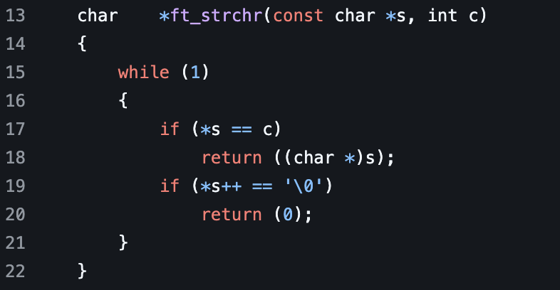
strclr
This function is a void function, meaning it does not return a value. The function takes a character array s as its parameter. Next, it checks to see if the value passed was null. If it is null, the function returns, meaning it cuts out of the function. If the value passed is not null, it then runs a while loop on the character array. It sets each value in to a null pointer or '\0' to clear the pointer values.
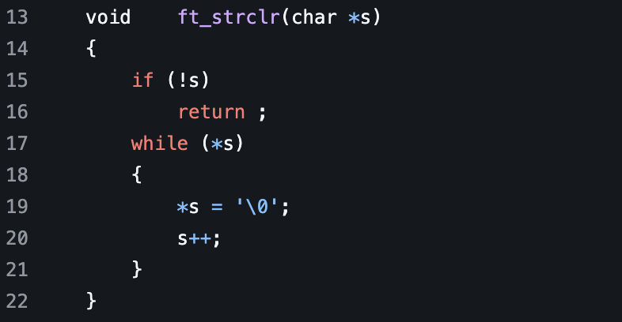
strcmp
This function returns an integer that takes 2 parameters. Both parameters are constant character pointers called s1 then s2. Next we loop through the s1 pointer as long as it is not equal to null. Then we use an if statement to check if the character s1 is not equal to s2 while typecasting an unsigned character pointer. This makes it so that values can not be negative while using an unsigned character. If the values are not equal, the function returns the value of s1 subtracted from s2. If they are equal, we iterate s1 as well as s2. If the function iterates entirely through s1 the while loop stops, then the value of s1 subtracted from s2 is then returned in the function. This function is used to compare character arrays.
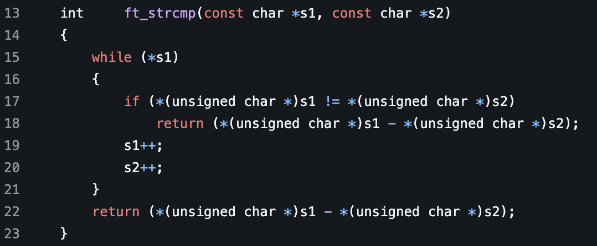
strcpy
This function returns a character array while taking in 2 parameters. One parameter is dst, the next is a constant character pointer called src. We first declare the character array dup. Next we set dup equal to the value of dst passed in the parameter. When then loop through src while it is not equal to null. We set each value of dst to src while iterating through both. After we end the dst array with a null pointer or '\0'. When then return the character array dup as is it equal to the pointer value of dst.
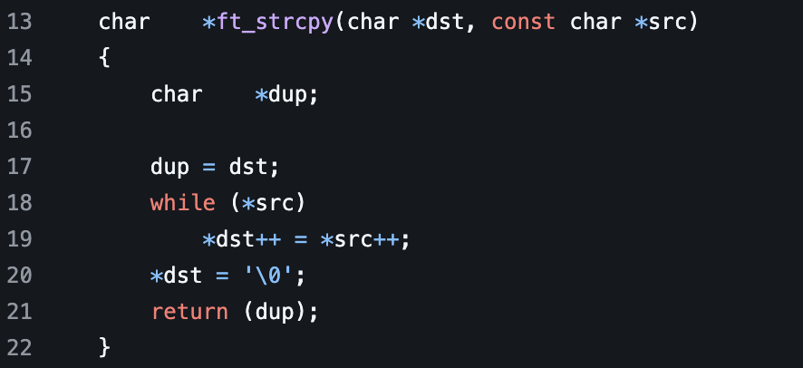
strdel
This is a void function, meaning it does not return any values. It takes a pointer to a pointer character value as it's one parameter. If the value is null, the function returns, stopping it there. Otherwise, it sets the pointe value to 0 then frees the allocation of memory associated with the value passed in the parameter.
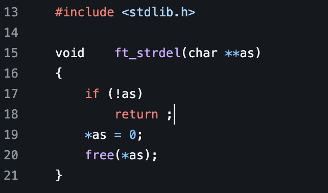
strdup
This function returns a character array with one parameter as a constant character value called s1. We first declare a character pointer called dup. We then typecast a character pointer to malloc then set it to the size of the array by getting the length of the data from ft-strlen. We then add one to the end of this to make room for the null pointer. After, we error handle making sure that dup is not null before proceeding. We then call our ft_strcyp function with dup and s1 as parameters. After this we return the dup variable.
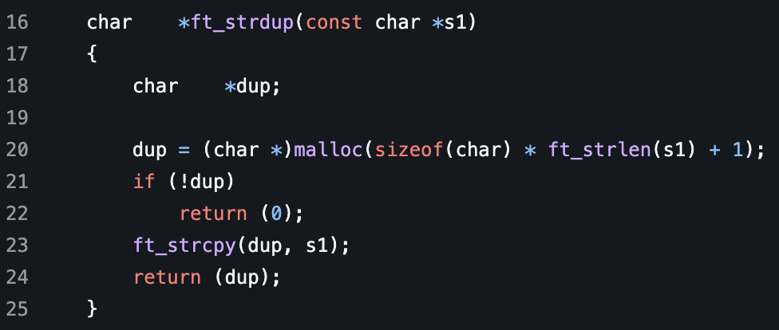
strequ
This function returns an integer. It takes two parameters: a constant character pointer s1, then a constant character pointer s2. First the function checks if s1 or s2 is null. If so, the function returns 0, then stops. Otherwise, the function continues looping through s1 until it is null. If a value of s1 does not equal s2, the function returns 0 rather than quits. Otherwise, it continues to iterate to the next character until s1 is null. After it checks the final character of s1 to s2 if they are not equal, it returns a 0. Otherwise, the function returns a 1 indicating that the values passed are equal.
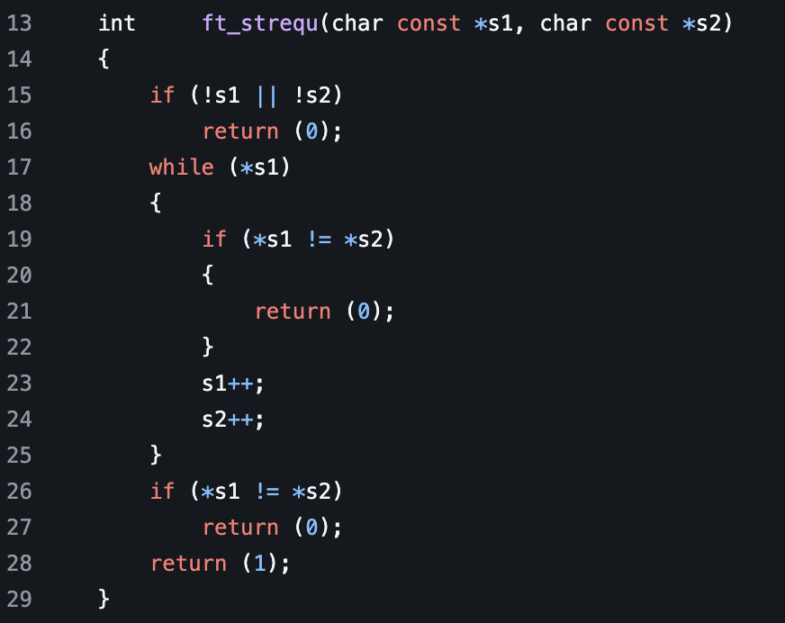
striter
This is a void function that does not return anything. It takes in two parameters. The first one is a character pointer called s, another is a void function pointer that takes a character pointer as a parameter called f. First, it checks to make sure that both parameters passed s or f are not null. If not, it then iterates through the s pointer while executing the function f on each value until the s pointer is null.
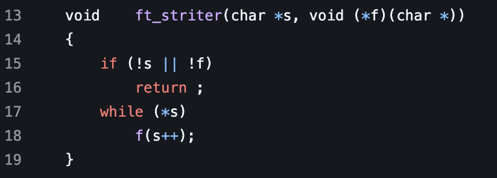
striteri
This function works the same as described above. Except the pointer to the function f takes a second parameter of an unsigned integer. This then declares an unsigned integer called x. Then, it initializes the value of x to zero. It then makes sure neither the values of s or f are null. Then it proceeds to the while loop while the value of the spot in s, dictated by the value of x, is not equal to null. It then loops through calling the function f with the value of x passed as the unsigned integer while a reference in memory to the value in s at the specific location determined by x is passed as the character pointer. It loops through until s returns a null value.
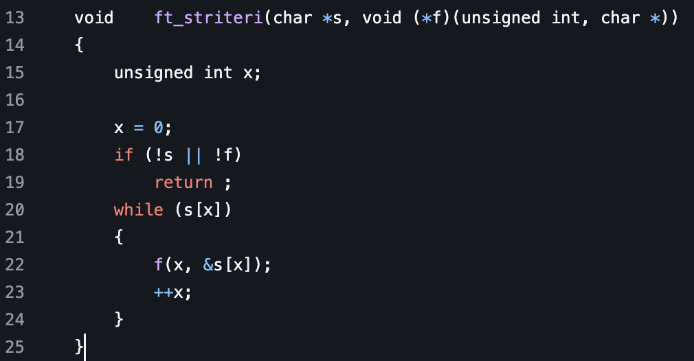
strjoin
This function returns a pointer to a character. This function takes two parameters. First we start by declaring two variables. First, a character pointer called str, then an integer called i. Next we check if s1 or s2 is null. If either of them are, we return 0. We then initialize i to 0, then initialize str using malloc to allocate the size of s1 plus s2 along with a plus one for the null pointer to add at the end. Next, we error handle checking if str is null or not. If it is, it returns 0, then the function stops. Next, it loops through s1, setting the indexed value of str to the same value of s1. Next, it does the same thing with a while loop on s2, setting the indexed values of str to the values of s2. Afterward, it adds a '\0' to the end of the string. It then returns str giving the return value of s1 as well as s2 joined together.
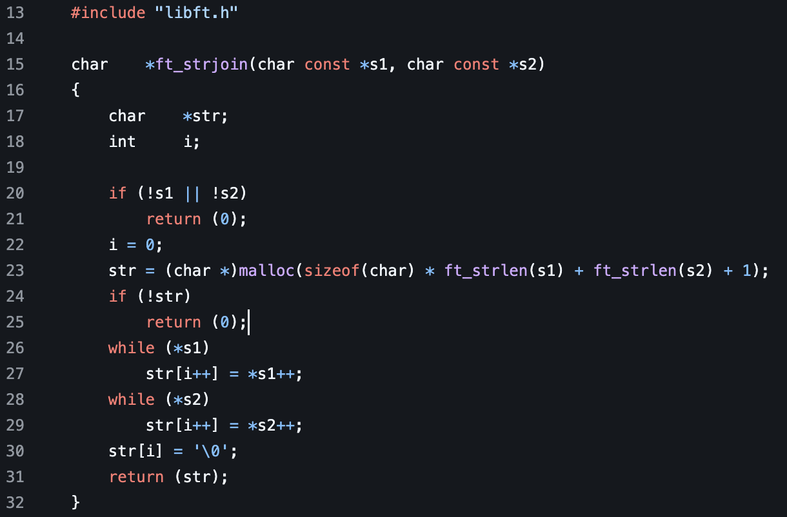
strlcat
This function returns a size_t which is an unsigned integer. It takes three parameters: a character pointer dst a constant character src then a size_t size. We first declare four different variables: a character pointer d, another character pointer s, then a size_t n, finally a size_t dlen. We then initialize d to dst while typecasting a character pointer. Then we set s equal to src while typecasting a pointer. We then set n equal to the size parameter passed in the above function.
we then loop through n while n and d are not null. The variable n is subtracted from while incrementing forward on the character pointer d. dlen is then initialized to the character pointer d subtracted from dst passed in the parameter. n is then set equal to the size subtracted from dlen. We then check to see if n is null. If n is null, we return dlen added to the length of the character pointer. Otherwise, we run a loop on the character pointer s. If n is not equal to one, we set the value of d to s while incrementing d. After we subtract from n. Then, we increment s until s is null. We then add a null pointer '\0' to d. After we return, dlen is added to the value of s subtracted by src.
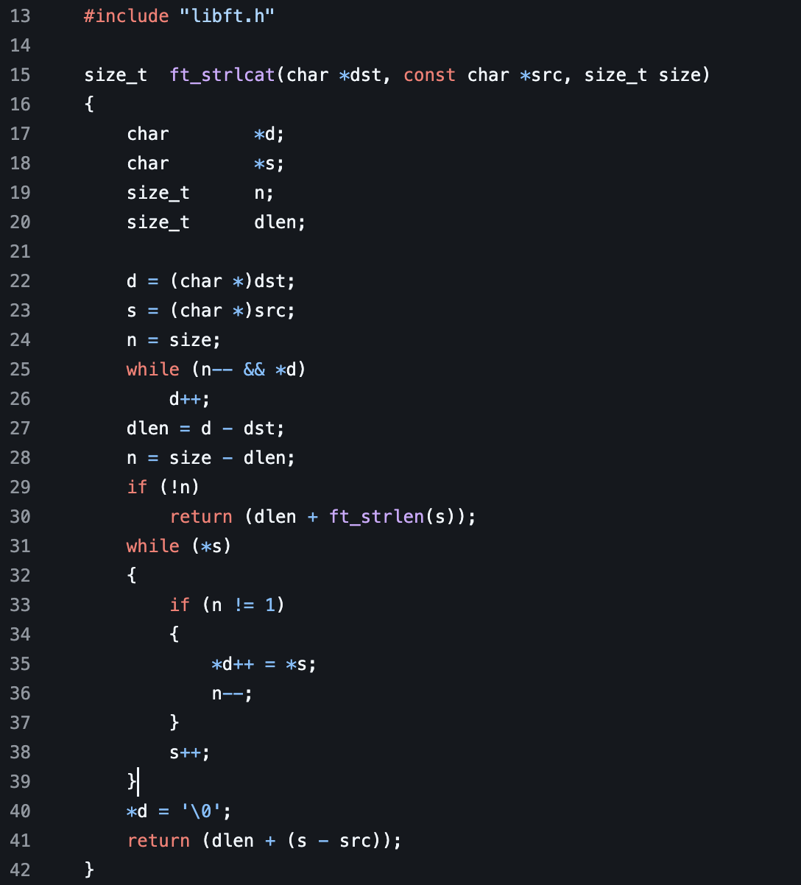
strlen
This function returns a size_t which is an unsigned integer. It takes one parameter, which is a character pointer called str. We first declare a size_t count. We then initialize count to the value of 0. After we loop through the str pointe while adding count each time. The loop runs until a null pointer is reached. After it returns the count which is the total length of the string.
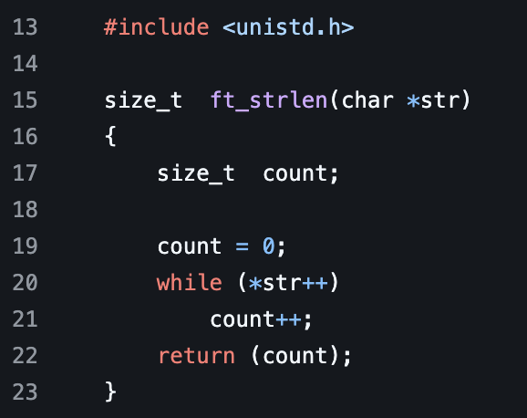
strmap
This function returns a character pointer. It takes two parameters; one that is a const character pointer called s. another that is a pointer to a function that returns a character that also takes a character as a parameter. We first declare two variables, one character array called str than another integer called i. We then initialize the value of i to 0. Next we check if s or f is null. If either of them are null, we return a 0 from the function. Then, we initialize str to equal a newly allocated block of memory called from malloc, which is the size of the length of s plus one. We then error handle to make sure that str is not equal to null. Then, we run a loop on the s array using i as an incrementer. In this array we set the value of str at i to the result of the function ran on the character at i on the s array. We then iterate I by one. After that, the end of the string is set to '\0' which is a null pointer. After this, we then return the str character array.
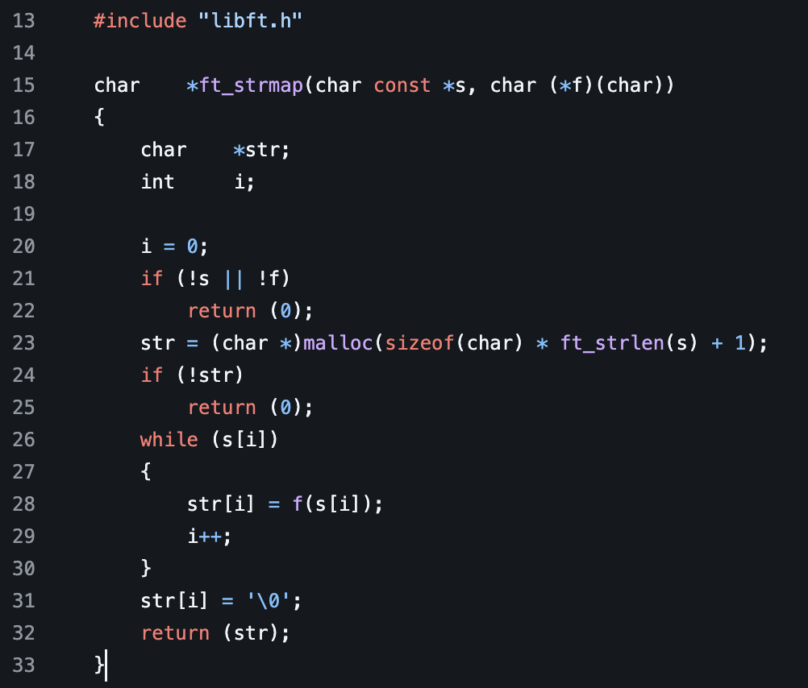
strmapi
This function is the same as described above however the pointer to the function f has an extra parameter of an unsigned integer that is passed while looping through the s array.
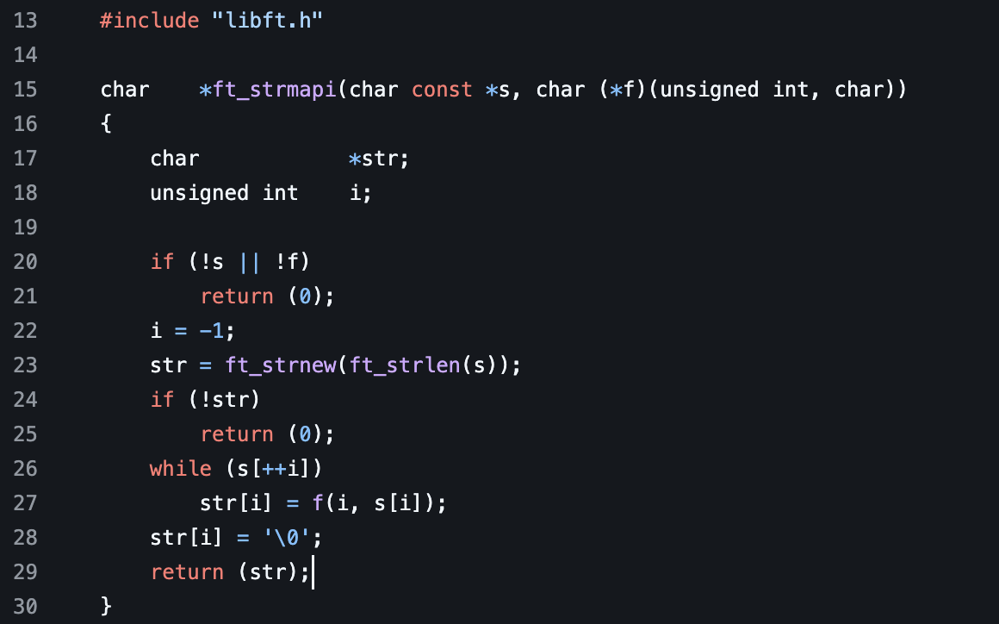
strncat
This function concatenates two strings with the second string being copied as long as the n is passed. It returns a character array while taking three parameters. s1 which is a character array, then s3, which is a const character array, then a size_t called n. First we declare a character array variable called dup. Next, we initialize dup to s1. Next we iterate over s1 while it is not a null pointer. Next we run a loop while n is not equal to null and s2 is not equal to a null pointer. If either of these conditions are met, the loop shall exit. In the loop, we set s1 equal to s2 while iterating through both. Finally, we add a null pointer to s1 at the end. We then return the dup character pointer as it is pointing to the same value as s1.
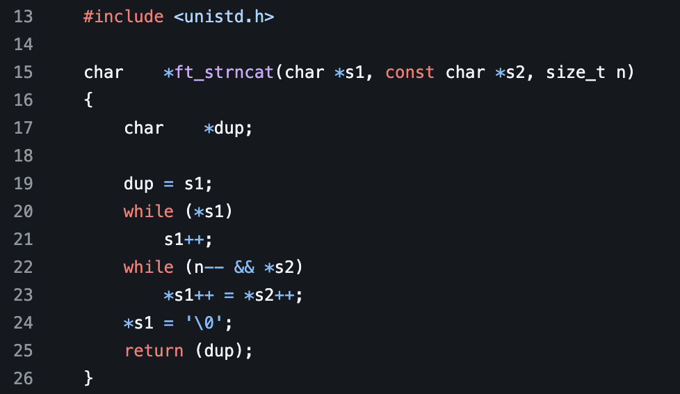
strncmp
This function returns an integer. It takes three parameters. The first parameter is a constant character pointer s1. The second is a constant character pointer s2. The third is a size_t called n. We start the function by running a while loop while n is not equal to 0. The loop subtracts 1 from end every cycle using the -- on the end of it. The first if statement checks if the character pointer s1 is not equal to s2 while castyping an unsigned character pointer to each. If they are not equal, the function returns the value of s1 subtracted from s2. It then moves on to check if s1 and s2 are null. If so, it calls the break function which ends the loop. If neither of those conditions are met. It then iterates the s1 as well as the s2 character pointers. This is a way to compare strings or character arrays up to a certain length that is established by the size_t n parameter that is passed into the function.
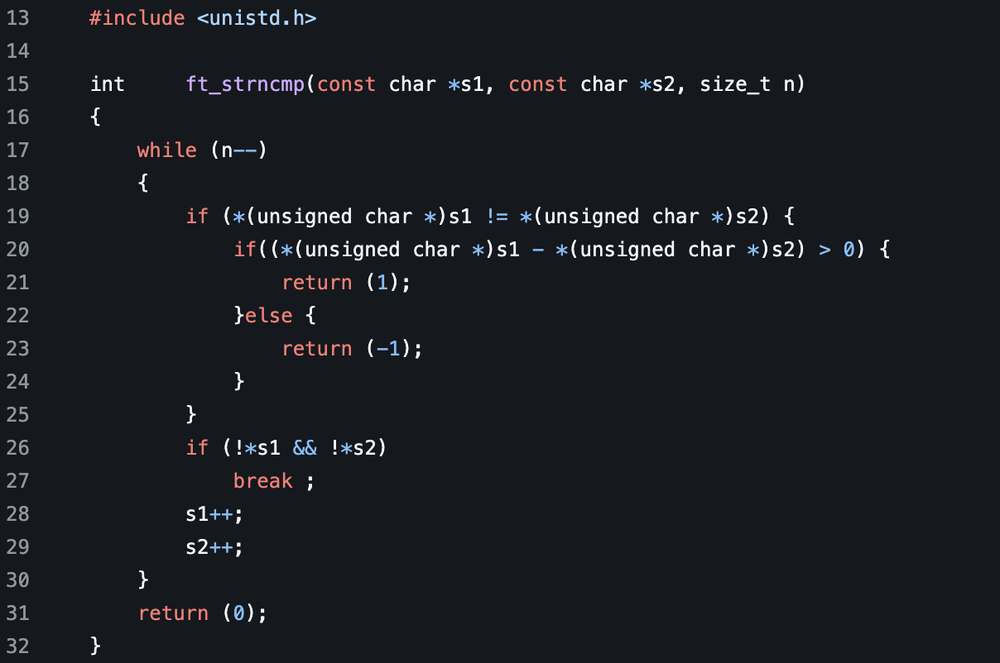
strncpy
This function returns a character array. It has three different parameters. The first parameter is a character pointer called dst. The second one is a constant character pointer called src. The third one is a size_t called len. First we declare a character pointer called dup. Next we declare a size_t called start. We then initialize dup to dst, then start to len. If len is null, then the function returns the dup string. If it isn't null, it moves to the while loop. This loop function while src is not a null pointer and the len is not 0. It then sets dst equal to src while incrementing both. After it checks if len is greater than the start. If it is we call the ft_bzero function using dst as well as len as parameters. After this, we then return dup as the copied string.
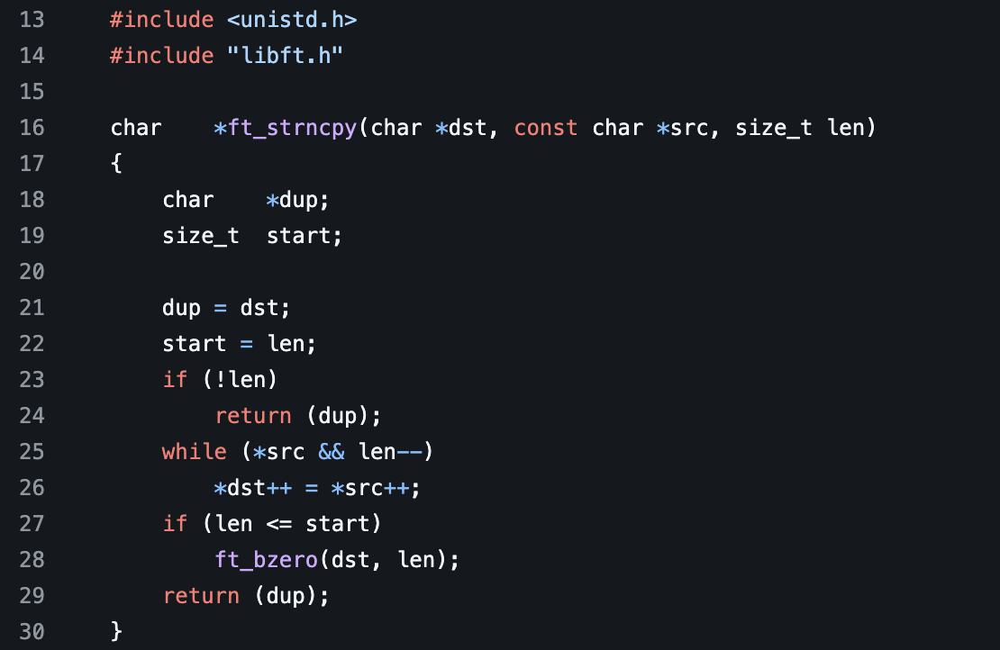
strnequ
This function returns an integer. It takes three parameters. The first one is a const character pointer called s1. The next is a constant character pointer called s2. The third one is a size_t called n. Next it checks to see if s1 or s2 is null. If one or either of them are null the function returns 0. If not, it moves to the while loop, which executes while *s1 is not null and n is not equal to 0. if *s1 does not equal *s2 the function returns 0. Then the loop increments s1 as well as s2. Once either s1 is null or n is equal to 0 the loop stops than returns 1 meaning the character arrays passed are a equal from the length specified on the size_t n parameter.
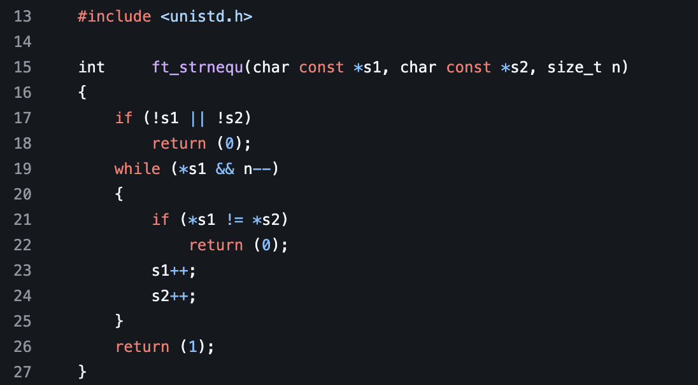
strnew
This function returns a character array. It takes one parameter, which is size_t size. First we declare our variables. The first variable we declare is a character pointer called str. Next we declare an integer called i. We then initialize i to zero. Then, we initialize str by typecasting a character pointer to malloc that is the size of the size passed in as a parameter. Next we error handle to see if str is null. If it is, we return 0 from the function. Otherwise, we continue to loop through str. We set each value of str to a '\0' which is a null pointer. After we return str which is the new string we created.
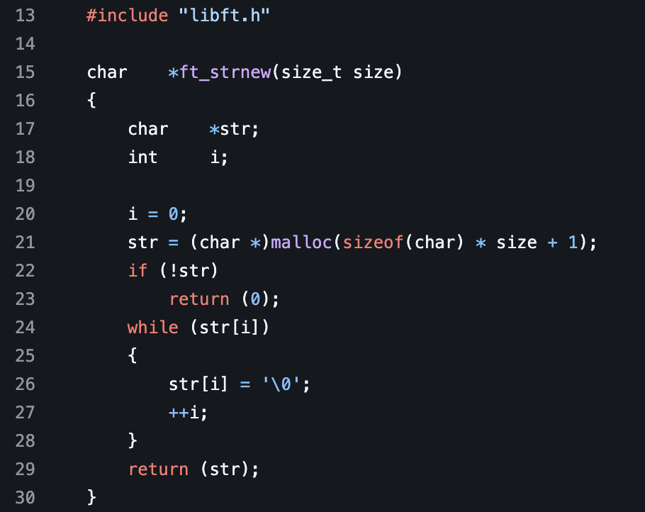
strnstr
This function returns a character pointer. This function takes three parameters. A constant character pointer called big. Then a constant character pointer called little. After that, it takes a size_t called len. Next we declare three variables. First we declare a constant character pointer called x1 then another called x2. Finally, we declare a size_t called n. Next we check to see if *little is null. If so we return the constant character pointer big while typecasting a character pointer to it. If not we enter into a while loop while big is not null and len is not equal to 0. We check to see if big is equal to little. If it is, we then set the value of n equal to len. The value of x1 equals big plus one, then the value of x2 equal to little plus one. Next we end a while loop with the conditions of x1 equal to x2 and x1 is not null as well as x2 not being null. Then finally, while n is not equal to 0. While these conditions are met, we increment x1 as well as x2 by one. After the while loop is done, we check to see if *x2 is null or not. If it is null, we return the constant character pointer big while typecasting a normal character pointer to it. After we increment the big character array. This function allows us to see if a string or character array is within another within a predefined length set by len.
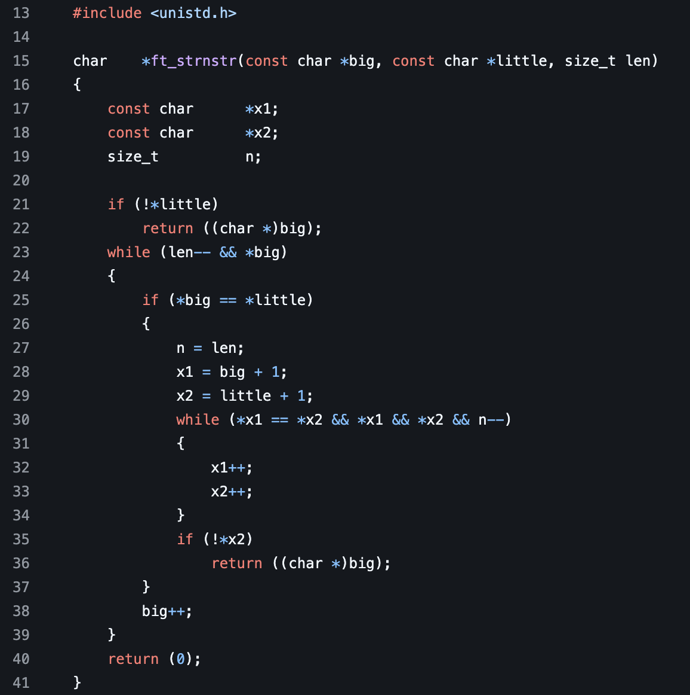
strrchr
This function returns a character pointer. It takes two parameters: one constant character called s and another integer called c. We then declare a variable that is a character array called last. Next, we set last equal to 0. Afterward, we check to see if *s is equal to null or not. If it is the function, then returns 0. Next we run an infinite while loop. We first check to see if *s has a character equal to c. If it does, we set last equal to that character while typecasting a normal character array. Then, we increment s while checking if it is a null pointer. If it is, we then return the value of last this ending the loop.
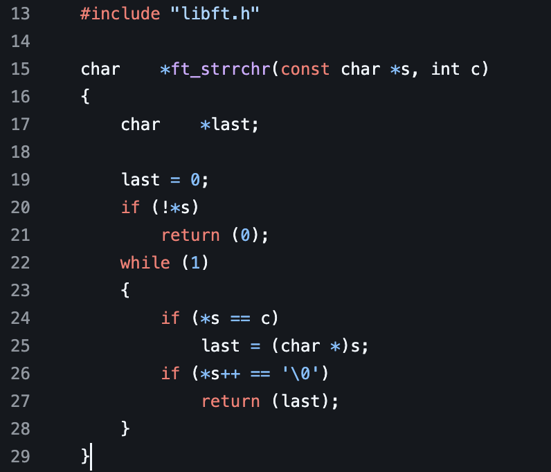
strsplit
This function returns a multidimensional character array. This function takes a const character array called s then a character called c as parameters. Next we declare three variables. One const character is a multidimensional array called array. The next two integers, one called x then another called count. We first check to see if s is null. If s is null, we then return the value of 0. Next, call the function wordcount with parameters s as well as c
This function wordcount returns a static integer. This function also takes two parameters: one constant character array called s, another character called c. We declare an integer called count, then initialize it to 0. After we loop through the s parameter while it is not null. Next we loop through s while it is equal to c. We then increment s while this condition is true. Afterward, we check to see if s is null. If it is, we call the break function that stops the while loop. If we don't, we increment the count, then enter into another whole loop. We check to see i the character in s is not equal to c and is also not a null pointer, then we increment s. After we return the count variable from the function.
Next, we initialize an array to the value of a constant character multidimensional array typecasted to a malloc that is the size of a const character array with the length of the count we got plus one. After, we initialize x to the value of 0. We then do error handling to check if the array is null. If it is null, we then return 0 from the function. If not, we continue to loop with the s pointer. Next we loop through the s array while it is equal to c. Then we check if s is equal to a null pointer character. If it is, we then break. After that, we set the array index value of x equal to the a constant character array typecasted on the return value of the createword function. We pass two parameters in the create word function. One being a reference in memory to the s pointer, another being the value of character c.
The create word function returns a static character pointer. It takes a constat character pointer called str along with a character called c. We first declare two variables. A character pointer called temp, then an integer called i. We initialize i to the value of 0. We then set temp equal to a typecasted character pointer value of a malloc that is the size of a character value, which is the length of the value returned from lettercount with str as well as c passed as parameters than plus one
The letter count function returns a static integer. It takes two parameters, one being a constant character pointer called str, then a character c called. We declare an integer called i. We initialize i to the value of 0. Next we loop through the value of s using i as an index to call values from s. While the indexed value is not equal to the passed c character and the value is also not null, we iterate i. After we return the value i.
Now back in our createword function, we finish initializing temp. Then, we check to make sure temp is not equal to null. If it is, we return a 0 from the function. After we run a while loop on str calling the values indexed at i. while the str value does not equal the c value, as well as the str value not being null, we continue the loop. We then set the temp indexed value equal to the str indexed value while incrementing i. After the while loop is complete, we set the end of the temp array to a null pointer. We then return temp from this function.
After this, we loop through s while it is not null and while the value of s is not equal to the c character. We increment s while these conditions are true. Then, we check if count is equal to 1. If it is, we then break the loop. Finally, we set the last value of the array variable to 0. After, we typecast a multidimensional array to the value of array as we return it.
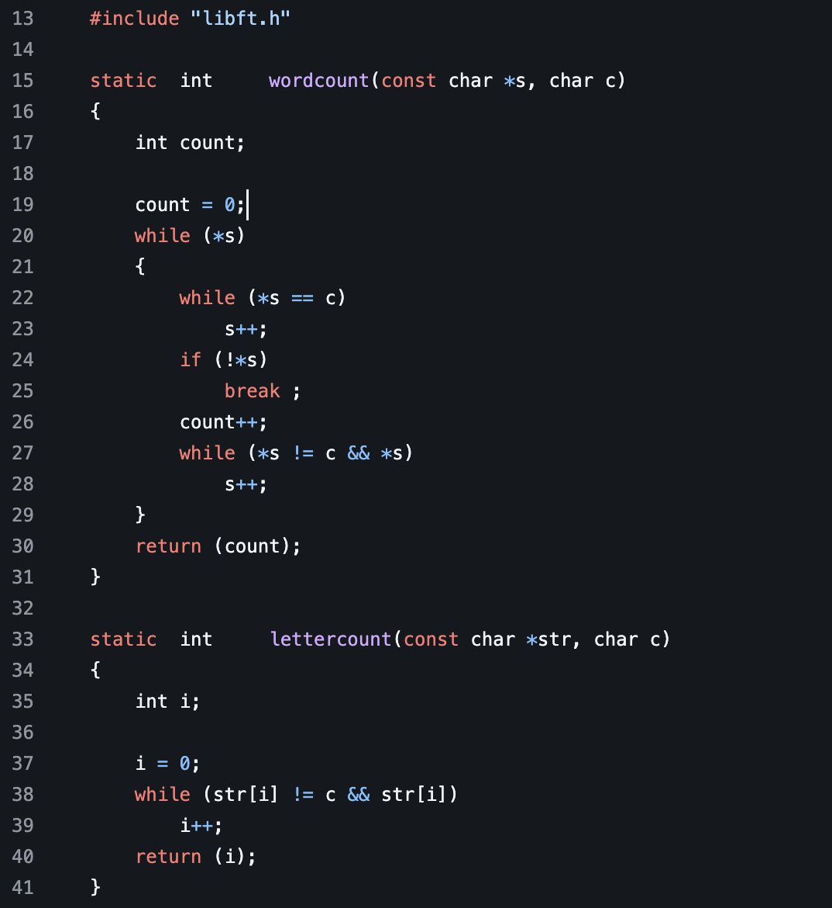
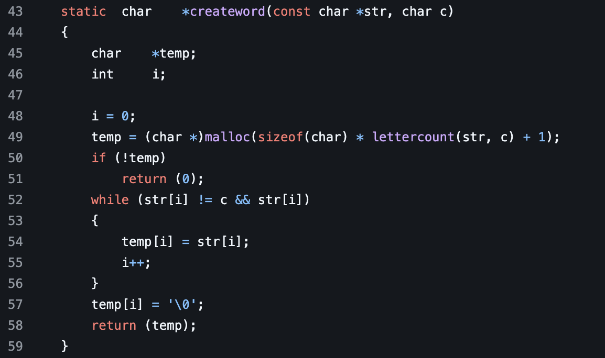
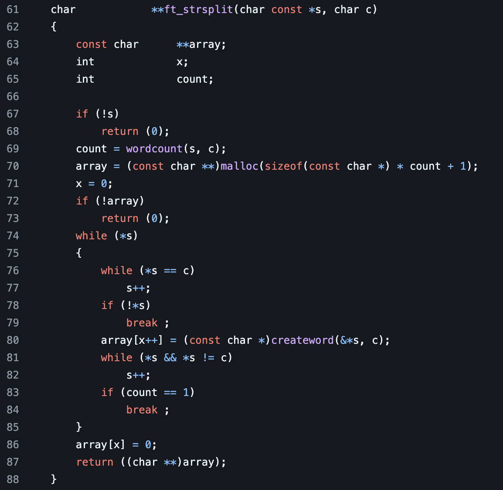
strstr
This function is the same asstrnstr except in the second while loop it does not have the value n as a condition for incrementing.
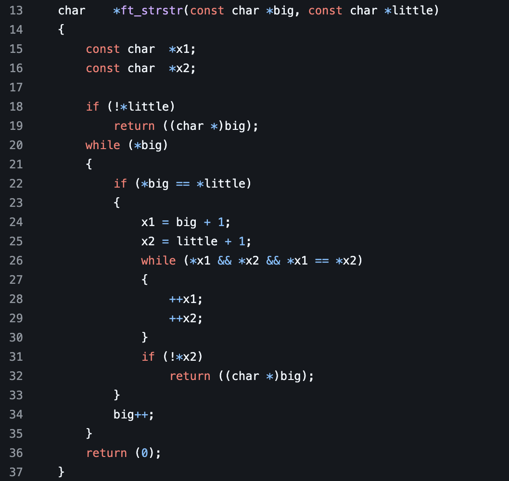
strsub
This function returns a character pointer. It has three parameters. The first one is a constant character pointer called s. The next is an unsigned integer called start. Finally, we have a size_t called len. We first declare two separate variables. One character array called str then another integer called i. We then check if s is null. If it is we return 0 then stop the function. Otherwise, we continue to initialize i to 0 then initialize str to a newly allocated character pointer data type that is the size of the len passed as the parameter plus one. We then check if str is null. If it is null, then we return 0. Next we increment through the while loop while subtracting from start. We in the loop we increment x until the condition is meet to exit. Then we do another while loop subtracting from len while it is not equal to 0. In the while loop we set the indexed value of str to the value of s while incrementing both. After this, we set the end of the string to a '\0' then return the str.
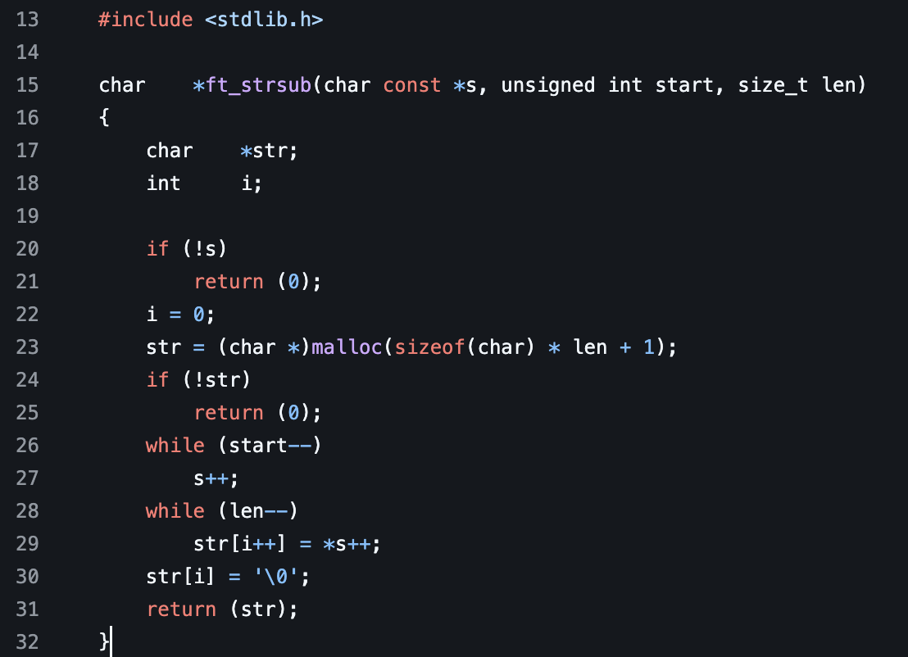
strtrim
This function returns a character pointer. It takes one parameter, which is a constant character array called s. We first declare our variables. One is a constant character array str another is an integer called i. We first do error handling to make sure the value passed into the construct is not null, in this case. If it is we return 0 which stops the function. Next, we initialize i to equal 0, then initialize str to freshly allocated memory that is the length of the parameter s that was passed plus one. Next we do more error handling to make sure str is not equal to null. If it is, we return 0, stopping the function. Next we run a loop while the pointer's is equal to a ' ' or '\n' or '\t'. \n is a new line, \t is a tab, ' ' is simply a space. While these conditions are true, we increment through s. Next, we run a while loop while s is not equal to null. We then run an if function on the return value of the flags function, which returns a static integer. If the value returned is one, the loop breaks, if the value returned is 0, we move to the next line.
The flags function returns a static integer. It takes on a parameter which is a constant character called s. We then loop through s while it is equal to ' ' , '\n', or '\t'. If it is we increment s. If s is equal to null, we return 1. Otherwise, we continue through the loop then return 0.
If the flags function returns 0, we then increment the indexed value of str as well as the value of s while setting the indexed value of str to the value of s. After this, we add a null pointer to the end of str before returning it as a variable.
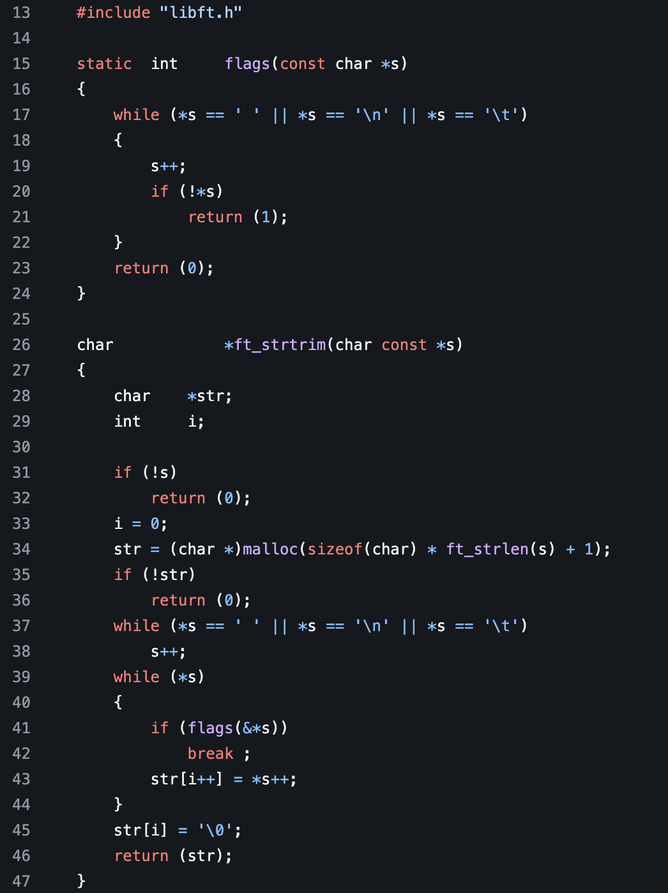
tolower
This function returns an integer. It takes one parameter, which is an integer called c. It then checks if the value of c is between the ascii table values of 'A' to 'Z'. If it is we add 32 to the value of c, then return it. This returns the lowercase value of the integer passed.
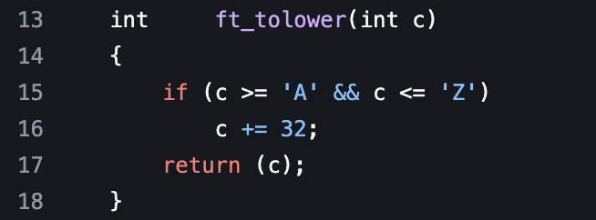
toupper
This function returns an integer. It takes one parameter, which is an integer called c. We first check to see if the value of the integer is between the ascii values of 'a' to 'z'. If it is, we subtract 32 from this value, then return it. This returns an uppercase value of the same letter.
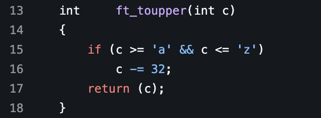